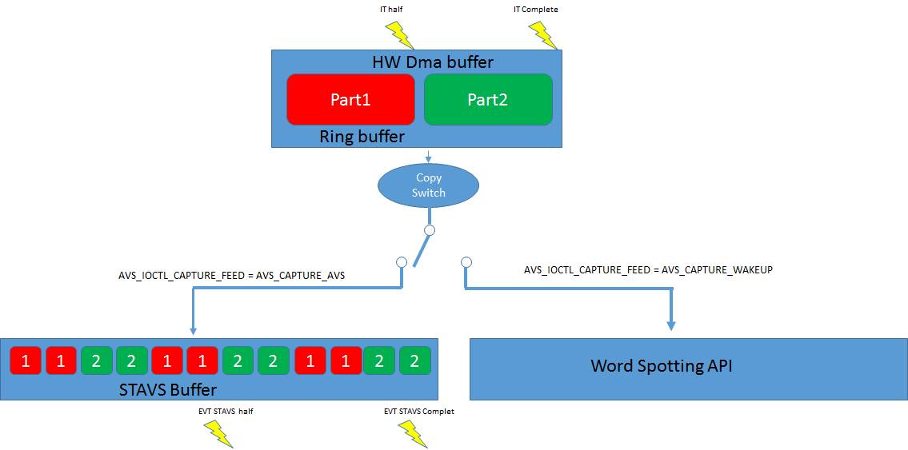

|
STVS4A
v1.1.1
|
|
STVS4A
v1.1.1
|
The porting layer is not part of the STVS4A exposition, this section describes roughly the porting layer architecture and won’t go in the detail because this module could change in the future.
STVS4A has been designed to support various board and hardware configuration. When STVS4A core need a low-level service, it uses a driver and IOCTL and some abstraction functions. Drivers and abstraction functions are implemented in the Porting Layer module. For example, using the porting layer, it easy to add a word spotting recognition, or add a deported microphone connected by Bluetooth such as Blue coin or an audio front end hardware processing bean forming or echo cancellation. The code that support those new HW configuration will takes place in the porting layer and STVS4A core won’t be changed. Its location is src/porting and is organized as follow.
|
Folder name |
Comments |
|
Common |
This folder includes some functions completion supporting extra services such as compiler support, MP3 player, sys timer, etc. |
|
Network |
The folder exposes some GLUE for network low-level abstraction. |
|
stm32F7xx/XXX |
This folder exposes some GLUE for the board support. Each entry in the folder represent an HW configuration variance. |
Internally, STVS4A exposes 3 drivers as global variables. STVS4A core uses only those drivers to communicate and initialize the HW.
|
extern AVS_porting_audio drv_audio; extern AVS_porting_instance drv_instance; extern AVS_porting_sys drv_sys;
|
During the init/term, the STVS4A core will call those drivers and will assume that the Init is done. Each failure during this phase will cause a fatal assertion. Drivers have the following specific meaning.
· AVS_porting_audio Supports all audio aspects
· AVS_porting_sys Supports variance or specific board features
· AVS_porting_instance Supports the default configuration and specific features
STVS4A uses also abstraction functions to inter-connect external API to STVS4A modules. This mainly the case for TLS/Network and common services
When the application initializes STVS4A, the core will first call all drivers default functions in order to visit the factory and replace the zero values by a real default value compatible with the configuration. Then, the STVS4A core will initialize the audio pipelines and will call platform_Audio_init. After this step, STVS4A will call platform_MP3_decoder_init and will start audio voice and speaker threads. At this point the audio is fully initialized and functional. Then, STVS4A will continue the initialization by calling avs_network_config, this function is an abstraction function and is implemented in the porting layer. avs_network_config is in charge to create an IP stack and update the factory with correct IP Gateway DNS. More generally, avs_network_config initialize all dependencies mandatory for the HTTP/2 modules. Next steps are purely software and initialize the state module and finally the token module.
Supporting a new configuration supposes to implement the function drv_platform_Init, STVS4A will call this function at the very beginning of its initialization. This call must fill drv_audio, drv_instance, drv_sys with appropriate callbacks. Some callbacks are mandatory such as init() and term(), some others are not. During in the initialization process, STVS4A will fill all callbacks by a dummy callback returning always AVS_NOT_IMP. Some callbacks are present only for future extensions or specific configuration and are not implemented yet. The following code shows how to initialize a basic configuration.
|
AVS_Result drv_platform_Init(void) { drv_sys.platform_Sys_init = platform_Sys_init; drv_sys.platform_Sys_rnd = platform_Sys_rnd; drv_sys.platform_Sys_ioctl = platform_Sys_ioctl; drv_instance.platform_init = platform_init; drv_audio.platform_Audio_init = platform_Audio_init; drv_audio.platform_Audio_term = platform_Audio_term; drv_audio.platform_Audio_ioctl = platform_Audio_ioctl; drv_audio.platform_Audio_default = platform_Audio_default; /* Init the audio mp3 SW decoder */ drv_audio.platform_MP3_decoder_init = platform_MP3_decoder_init; drv_audio.platform_MP3_decoder_term = platform_MP3_decoder_term ; drv_audio.platform_MP3_decoder_ioctl = platform_MP3_decoder_ioctl; drv_audio.platform_MP3_decoder_inject = platform_MP3_decoder_inject; /* Init the network support phy */ drv_sys.platform_Network_init = platform_Network_init; drv_sys.platform_Network_term = platform_Network_term; drv_sys.platform_Network_ioctl = platform_Network_ioctl; drv_sys.platform_Network_Solve_macAddr = platform_Network_Solve_macAddr; return AVS_OK; } |
Driver initialization example
This file is included by avs.h and exposes variances or update concerning the HW configuration.
This file is included by all configuration source code and declares all common prototypes and types.
This file implement drv_platform_Init and overload some factory parameters such as CPU info, Configuration name, STVS4A HW profile, etc.
This file Implements Implement platform_Sys_init/platform_Sys_term and all optional functions according to the board configuration.
This file Implements drv_platform_Init, platform_Audio_default, platform_Audio_term. drv_platform_Init is in charge to analyze the factory and configure the audio HW according to the Board features. platform_Audio_default initialize default value for this configuration. platform_Audio_term Terminate the audio driver.
This file implements most of the active configuration code. For Audio init/term/ioctl. During the audio initialization, STVS4A will create 3 audio pipelines. The recognizerPipe, synthesizerPipe, auxAudioPipe. An audio pipeline is composed of 2 ring buffers, in the inBuffer and the outBuffer. STVS4A core expects that the porting layer initialize the first part of the pipeline (bufferIn or bufferOut according to the pipe type). Then, STVS4A core will compute the second part of the pipeline using parameters comming from the first part of the pipeline.
The poring layer Initialize first pipelines according to their features and factory parameters. Basically, the initialization is done in 3 steps.
· Audio Board HW initialization
o Audio initialization could be done using the ST BSP, Bluetooth, specific code. The HW will need to feed ring buffers.
· Finalize the pipelines initialization
o Use avs_audio_buffer_create with the buffer placement and size for synthesizerPipe and recognizerPipe ring buffers and optionally auxAudioPipe. synthesizerPipe and auxAudioPipe must have the buffer parameters.
· Start the audio pumping
o Feeds recognizerPipe. InBuffer with sample coming from the microphone.
o Fill the HW with samples coming from synthesizerPipe. outBuffer.
o Do nothing with the pipe auxAudioPipe, the pipe will be mixed with synthesizerPipe by the STVS4A core.
The audio sample pumping model used by STVS4A core is the “half size buffer”. This means that we feed or consume buffer half size by half size and during time where the second part of the buffer is locked by the HW, we can process the first part. This model is commonly used by the HW. STVS4A core expect to be signaled when a half buffer is produced or consumed. When the ring buffer has received or consumed an half buffer, the driver set the flag pipe.pipeFlags with AVS_PIPE_EVT_HALF and signal an event to the audio thread. The following code shows how to signals an audio buffer change state to the STVS4A audio core.
|
gHandle->synthesizerPipe.pipeFlags |= AVS_PIPE_EVT_HALF; avs_core_terminat_isr(avs_core_event_set_isr(&gHandle->synthesizerPipe.outEvent));
|
Type code signaling a synthesizer half buffer consumed
|
gHandle->synthesizerPipe.pipeFlags &= (~(uint32_t)AVS_PIPE_EVT_HALF); avs_core_terminat_isr(avs_core_event_set_isr(&gHandle->synthesizerPipe.outEvent));
|
Typical code to signaling a synthesizer buffer fully consumed
For the best performance, the HW buffer must be share with the STVS4A ring buffer. In this case the when the HW raise interruption, the driver signals a half buffer processed and the STVS4A audio thread will process it.
In some case, the interruption rate is too high to leave enough processing time to the STVS4A audio thread (example if the interruption rate is 1 millisecond). In this case, the driver must disconnect the HW buffer from the ring buffer and use a bigger ring buffer than the HW and copy blocks by blocks samples in the ring buffer.
A driver exposes a function callback IOCTL. It is natural way for an application to work directly with the driver. There to kind of IOCTL, IOCTL standard defined in avs.h and IOCTL specific to a configuration defined in avs_porting.h. And IOCTL is not supposed mandatory, by default, not handled IOCTL returns _NOT_IMP.
|
uint32_t (*platform_XXX_ioctl)(AVS_instance_handle *pHandle, uint32_t code, uint32_t wparam, uint32_t lparam);
|
IOCTL prototype
wparam, and wparam are not typed, It is up the driver to interpret parameters properly and cast those values according to the parameters meaning.
There to kind of events, Events standard defined in avs.h and specifics to the configuration defined in avs_porting.h. When a driver wants to communicate with the application, it can send a standard or nonstandard event. For example, if the driver supports a word spotting recognizer. When the Keyword is detected, the driver sends the event EVT_WAKEUP.
|
static int32_t afe_voice_trigger_found(uint32_t instance, uint32_t commandIndex) { AVS_instance_handle *pInstance = avs_core_get_instance(); avs_core_message_send(pInstance, EVT_WAKEUP, commandIndex); return AVS_OK; } |
The default STVS4A configuration (BSP) doesn’t provide Word Spotting support. But it is easy to add this feature if you have an API able to recognize an audio word. If you have a word spotting support, you have to manage the audio microphone feed. Samples coming from the microphone must be routed to AVS when a ALEXA dialogue starts and routed to the word spotting when STVS4A is Idle. When STVS4A has no longer need the microphone, it signals this state by the IOCTL AVS_IOCTL_CAPTURE_FEED to the audio driver. Using this IOCTL, it is easy to route properly the audio microphone samples.
|
 |
Audio samples routing
As soon as this architecture is in place, you need to signal to STVS4A to transit from the IDLE state to the StartCapture state. This could be done using AVS_Set_State() or in the demo provided with the package simply Send the Event EVT_WAKEUP using the function AVS_Send_Evt(). There is a last thing to do to complete the support of the word spotting. You need to change the AVS device profile to “Voice Initiated). This could be done in the factory by setting the field initiator to AVS_INITIATOR_VOICE_INITIATED.
|
avs_init_default_interger(&pHandle->pFactory->profile, AVS_PROFILE_NEAR_FIELD); avs_init_default_interger(&pHandle->pFactory->initiator, AVS_INITIATOR_VOICE_INITIATED);
|
 1.8.4
1.8.4